Le Plan du Musée — toutes les salles, un seul regard
33 pages, quatre rayons. Le parcours principal, les salles du récit, les expériences, la méthode. Où que vous soyez, ce plan est à portée de clic.
Le parcours principal
Le cœur du musée — de Moïse au Codex H.
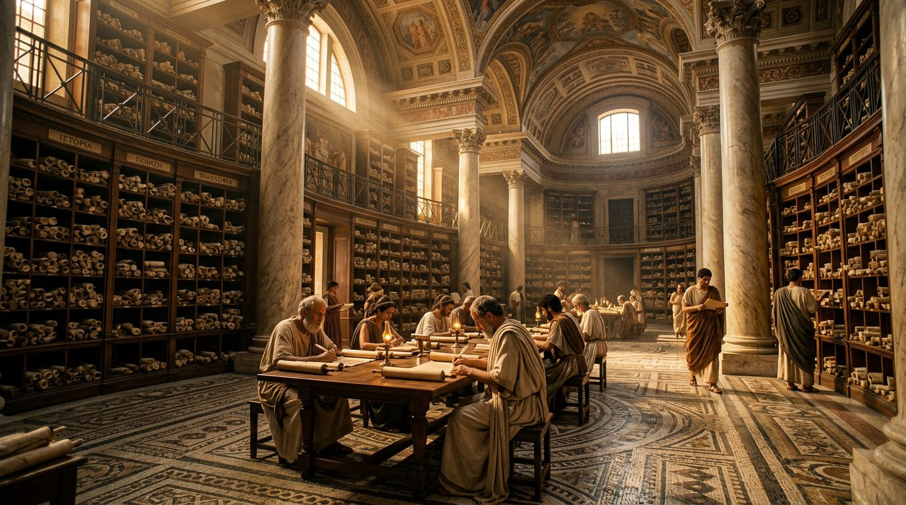
Le Musée — accueil
Le manifeste, la carte, les conventions.
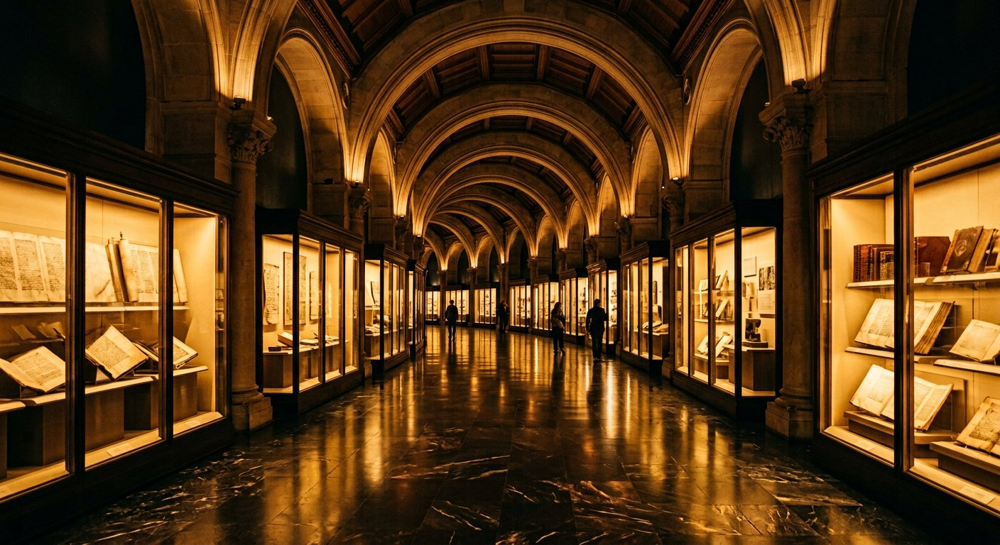
La Grande Frise
36 jalons interactifs, de Moïse au Codex H.
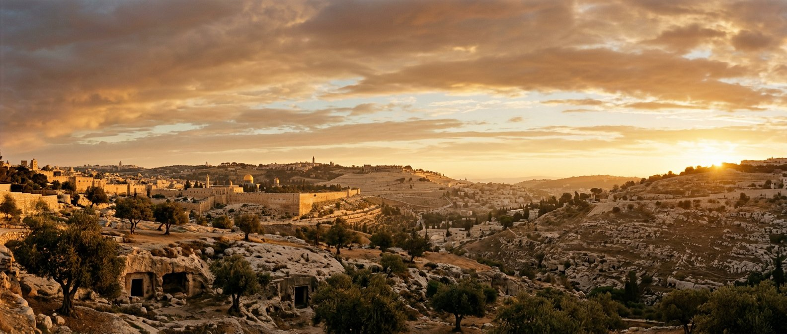
Les 11 Galeries
Origines, Copistes, Qumrân, Codex grecs, Codex H, Apocryphes, Traductions, Gutenberg, Preuves, Destructions.

III. Qumrân — la galerie phare
11 grottes, 900 manuscrits, les rouleaux de la mer Morte.

Le Codex H — 2026
Les 42 pages de Maurienne. L'actualité du texte.
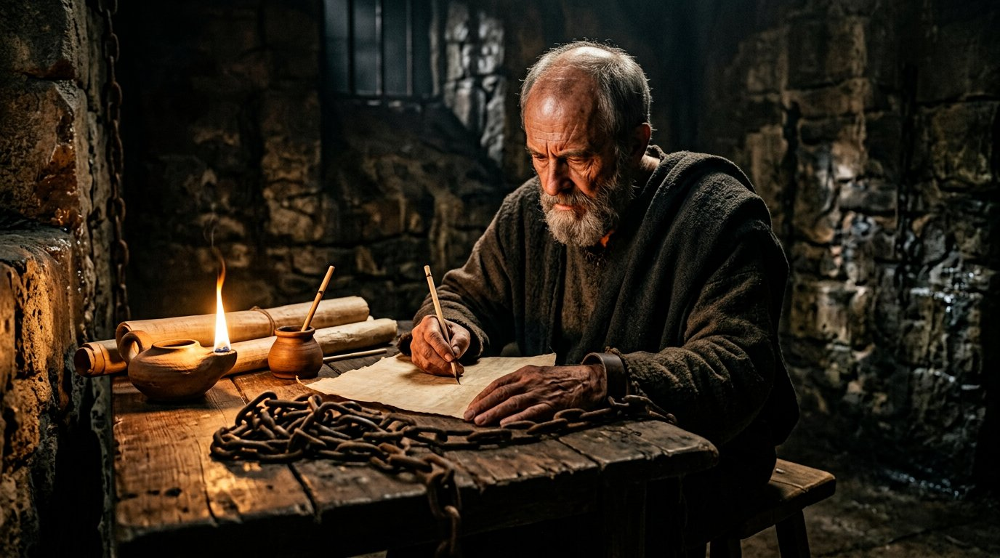
Le Dossier Paul
De P46 au Codex H — et le débat à deux thèses.

Le Dossier Marie-Madeleine
Témoin, légende, tradition — jamais confondus.
Les salles du récit
Les grandes narrations — découvertes, science, énigmes, beauté.
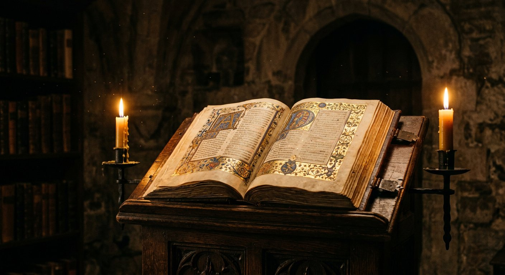
Le Livre d'Or des Découvertes
10 découvertes qui ont sauvé le texte.
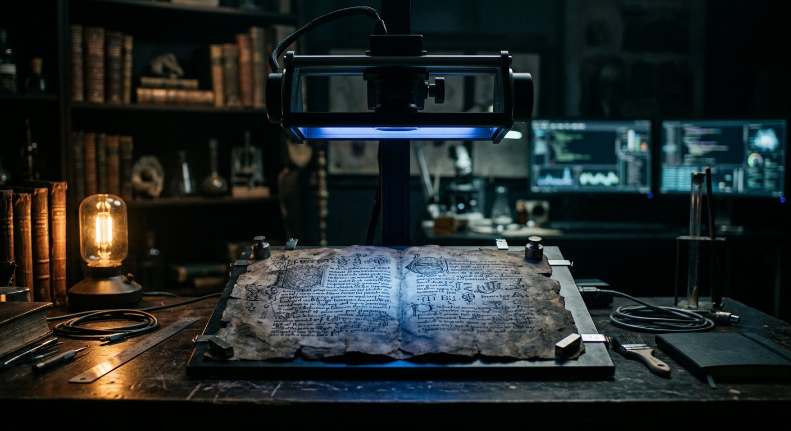
La Science au secours du Texte
Carbone 14, imagerie, IA — les laboratoires du XXIe siècle.
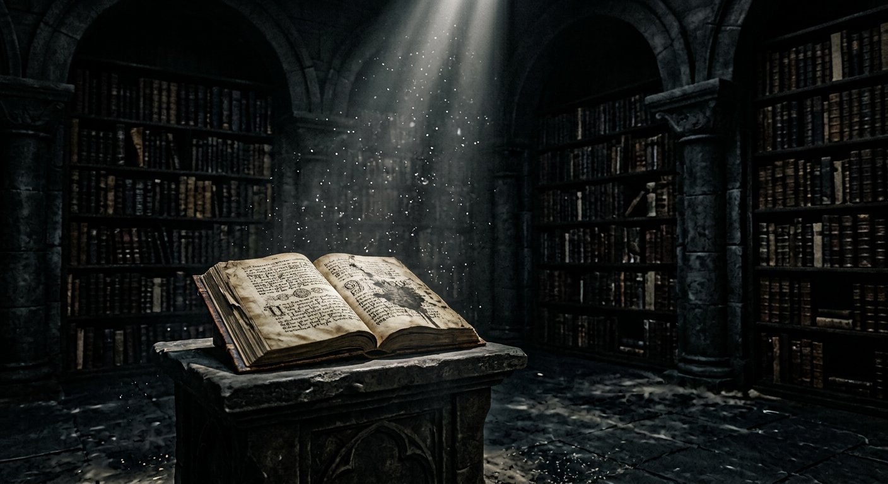
Les Énigmes du Texte
Fin de Marc, 666/616, l'arche disparue — sans rien cacher.
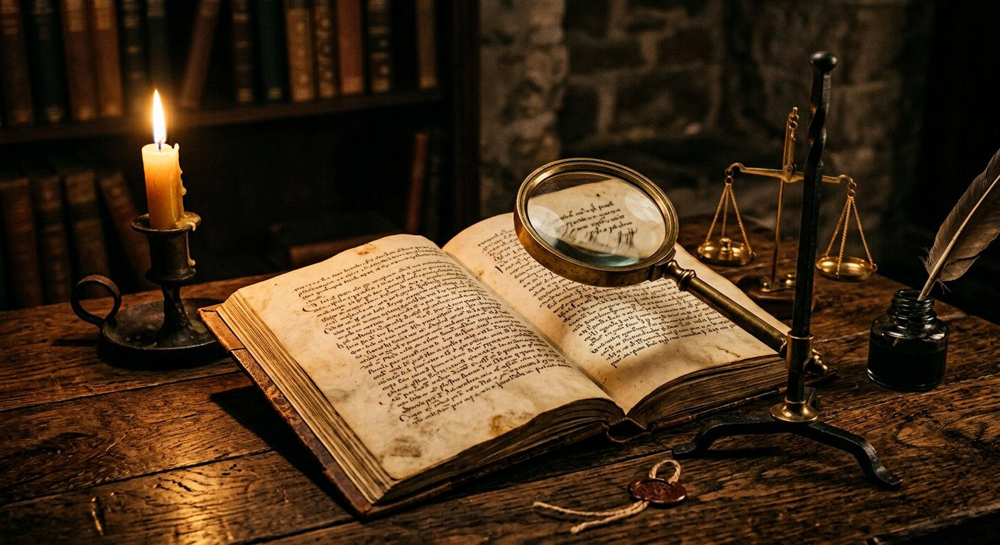
Vrai ou Faux — 10 idées reçues
Les phrases entendues partout, confrontées à la preuve.
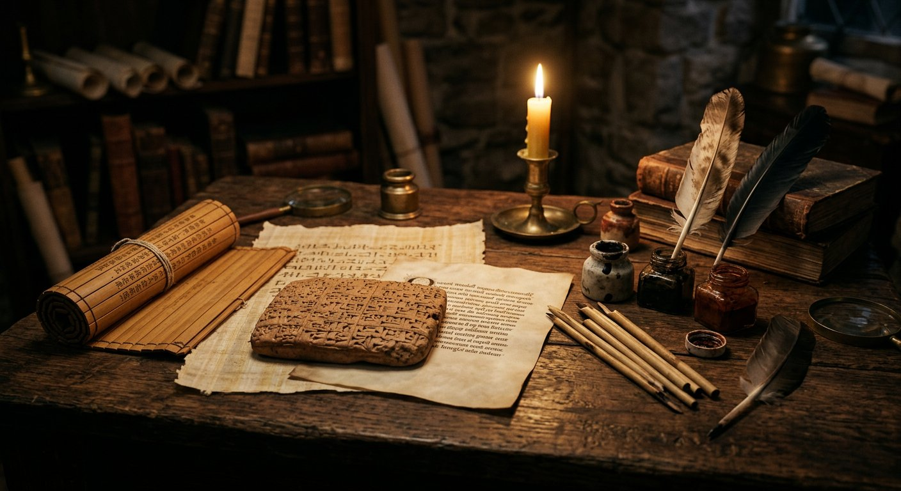
Les Voix du Monde
La Bible en 10 langues — alphabets et mots qui voyagent.

Le Jardin des Psaumes
7 psaumes intégralement traduits, hébreu + français.

La Lumière des Lettres
Enluminure, calligraphie, rubricateurs — l'art au service du texte.
Les expériences
À manipuler, écouter, comparer, rejouer.
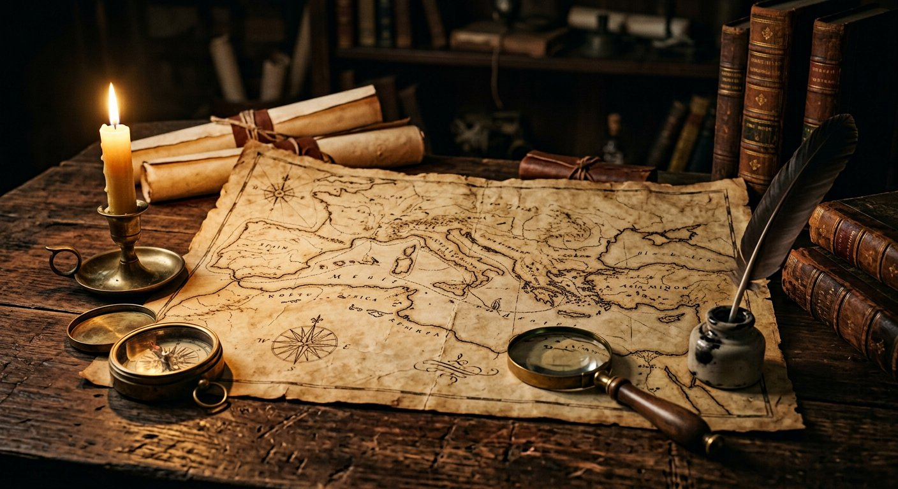
L'Atlas des Textes
3 cartes interactives : le monde, Qumrân, la route des traductions.
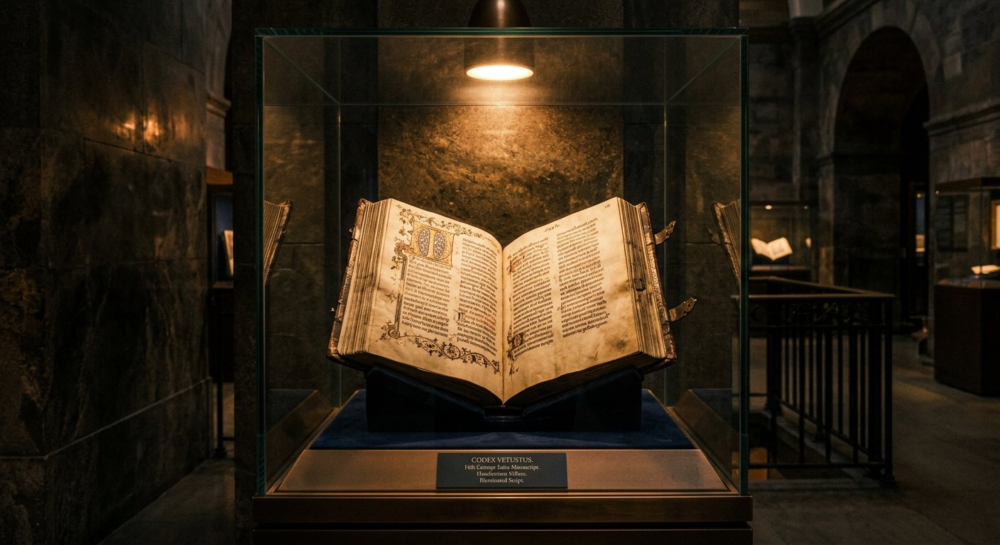
Le Cabinet des Trésors
24 artefacts en vitrine, en grand écran.

Le Comparateur de textes
5 passages en hébreu, grec, latin, français.

La Radio de VERBUM
63 pistes narrées — le musée qui s'écoute.
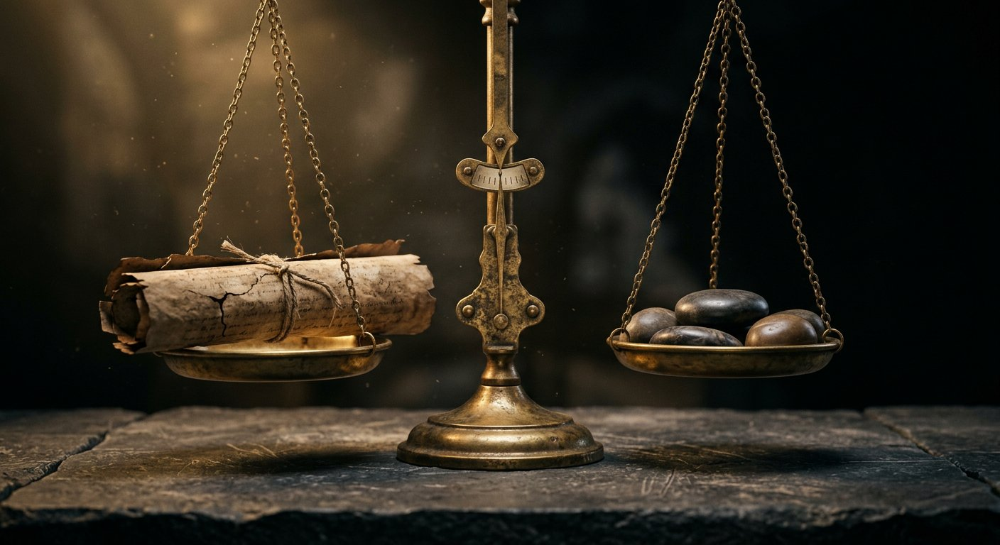
Le Défi de la Transmission
Un quiz de 10 questions pour tester vos acquis.

Le Glossaire
23 termes expliqués, du Tétragramme au massorète.

L'Expédition des Petits Scribes
7 missions de jeunesse, progression mémorisée.

La Visite guidée
10 étapes, 90 minutes — le parcours au complet.
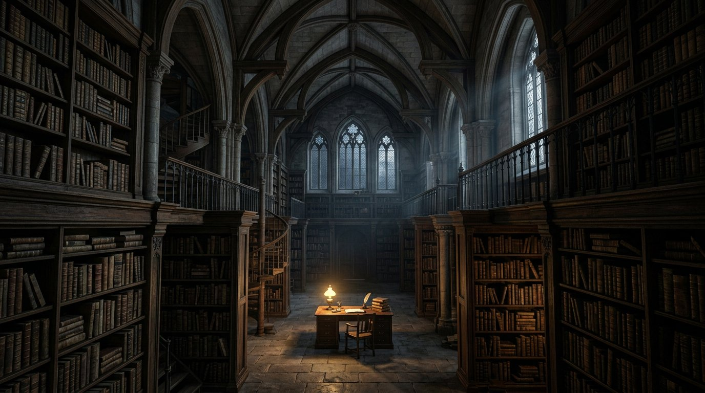
La Salle des Questions
12 questions fréquentes, 12 réponses sourcées.
La méthode
Ce que le musée affirme, ce qu'il nuance, ce qu'il ignore.